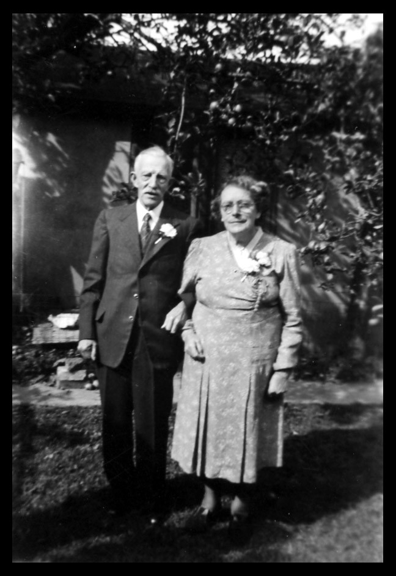
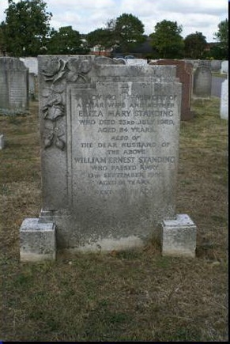
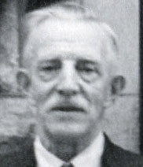
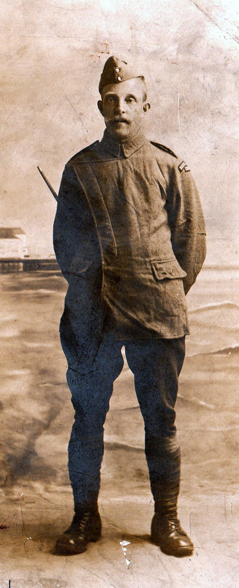
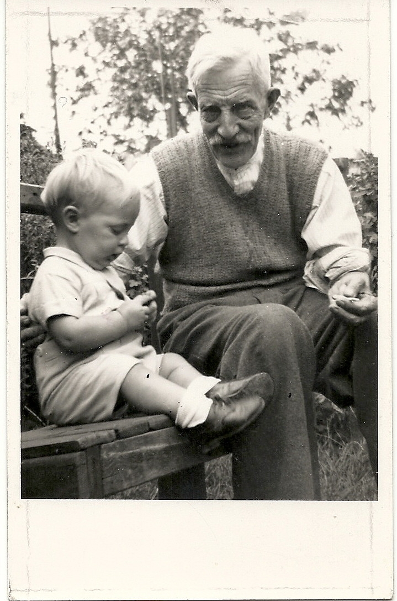
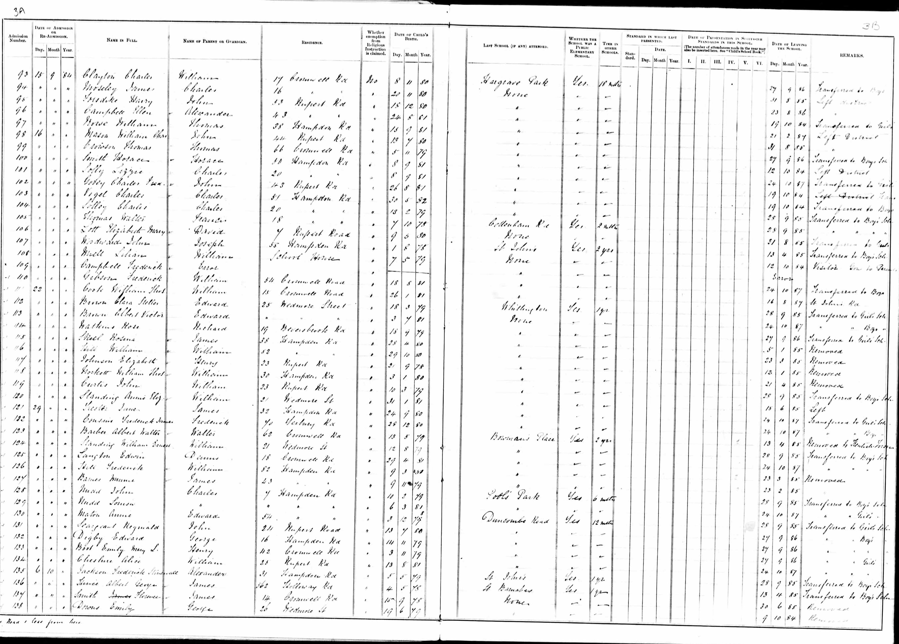

William Ernest Standing 1878 - 1969
[ Home ] | [ Calendar ] | [ Surnames Index ] | [ Errors ] | [ Family History ]A laundry man and the 3rd of 4 children of William Standing (a laundry keeper) and Adeliza Burnham, William Standing, the third cousin twice-removed on the father's side of Nigel Horne, was born in Folkestone, Kent, England on 12 Aug 18781,2,3, was baptised in Christ Church, Folkestone, Kent, England on 22 Sept 1878 went to Yerbury Road School, Islington, London, England He married Eliza Parr (with whom he had 7 children: Victor William, Ernest Douglas, Stephen Earling, Muriel Alice, Stephen Lawrence, Bernard Walter and Brenda Margaret) in Ilford, London, England on 29 Aug 19144.
During his life, he was living at York Rise, Highgate, London on 3 Apr 18818; at Edmund Street, Kettering, Northamptonshire, England on 5 Apr 18919; at Lansdowne Road, Charlton, London on 31 Mar 190110; at 5 Aurelia Cottages, Ley Street in Ilford on 2 Apr 19117, in 19256 and on 29 Sept 19391; and in Ilford in 19645 which is where he died on 13 Sept 19693. During 1917, he was serving in the military in Norfolk, England (RAF - service number 80614).He was buried there at Barkingside Garden of Rest, Longwood Gardens after 13 Sept 1969.
Parents
- William Stephen was born in 1850
- Adeliza Martha was born on 19 Oct 1846
Children
- Victor William was born on 10 May 1915
- Ernest Douglas was born on 10 Feb 1917
- Stephen Earling was born in 1921
- Muriel Alice was born c. Aug 1921
- Stephen Lawrence was born c. May 1923
- Bernard Walter was born on 7 Sept 1925
- Brenda Margaret was born on 9 Jan 1927
Citations
- 1939 Register - Findmypast (was recorded at this address)
- England & Wales deaths 1837-2007 - Findmypast
- England & Wales, Death Index: 1984-2005 Online publication - Provo, UT, USA: The Generations Network, Inc., 2007.Original data - General Register Office. England and Wales Civil Registration Indexes. London, England: General Register Office. © Crown copyright. Published by permission of the Cont
- England & Wales, FreeBMD Marriage Index: 1837-1915 Online publication - Provo, UT, USA: The Generations Network, Inc., 2006.Original data - General Register Office. England and Wales Civil Registration Indexes. London, England: General Register Office. © Crown copyright. Published by permission of the Cont
- London, England, Electoral Registers, 1832-1965 Ancestry.com Operations, Inc.
- From the birth certificate of his son, Bernard
- 1911 Census for England & Wales - Findmypast (was age 32 and a boarder in the household)
- 1881 England, Wales & Scotland Census - Findmypast (was age 2 and the son of the head of the household)
- 1891 England, Wales & Scotland Census - Findmypast (was age 12 and the son of the head of the household)
- 1901 England, Wales & Scotland Census - Findmypast (was age 23 and the brother of the head of the household)
Media
William Standing - Eliza Parr

William Standing - Eliza Parr - gravestone

William Standing

William Standing - flying corps

William and Philip Standing

William Standing - birth certificate

Yerbury Road School Admission and Discharge Register for Infants

1939 Register Transcription - TNA-R39-1088-1088B-002-28
England & Wales births 1837-2006 - BMD/B/1878/4/AZ/000527/203
Kent, Canterbury Archdeaconry baptisms 1538-1912 - GBPRS/CANT/B/96013035
England & Wales marriages 1837-2008 - BMD/M/1914/3/AZ/001142/141
England & Wales deaths 1837-2007 - BMD/D/1969/3/AZ/001009/092
British Royal Air Force, Airmen's service records 1912-1939 Transcription - GBM-AIR79-309859
1911 Census for England & Wales - GBC/1911/RG14/09866/0429/3
1939 Register - TNA-R39-1088-1088B-002-26
1901 England, Wales & Scotland Census - GBC-1901-0005686456
1901 England, Wales & Scotland Census - GBC-1901-0005686458
England Births & Baptisms 1538-1975 - R_884904427
Family Tree

Map
Generated by ged2site. Last updated on Jul 3, 2024
Known Issues
Burial place (Ilford, London, England) has no citations
Listed in the residence for 1964, but spouse Eliza Parr is not
Adding date of burial as 'aft 13 Sep 1969'